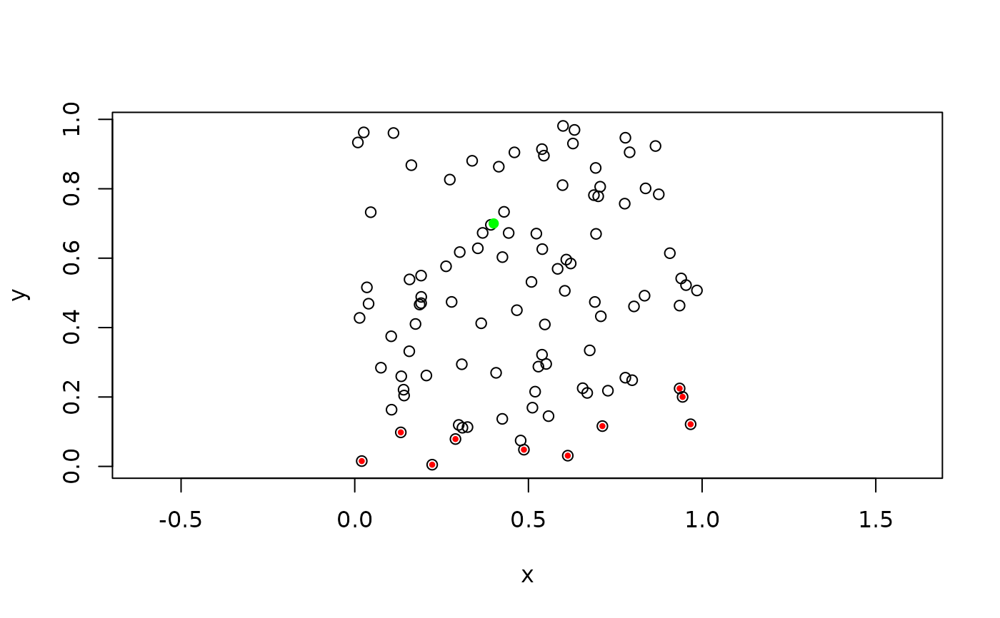
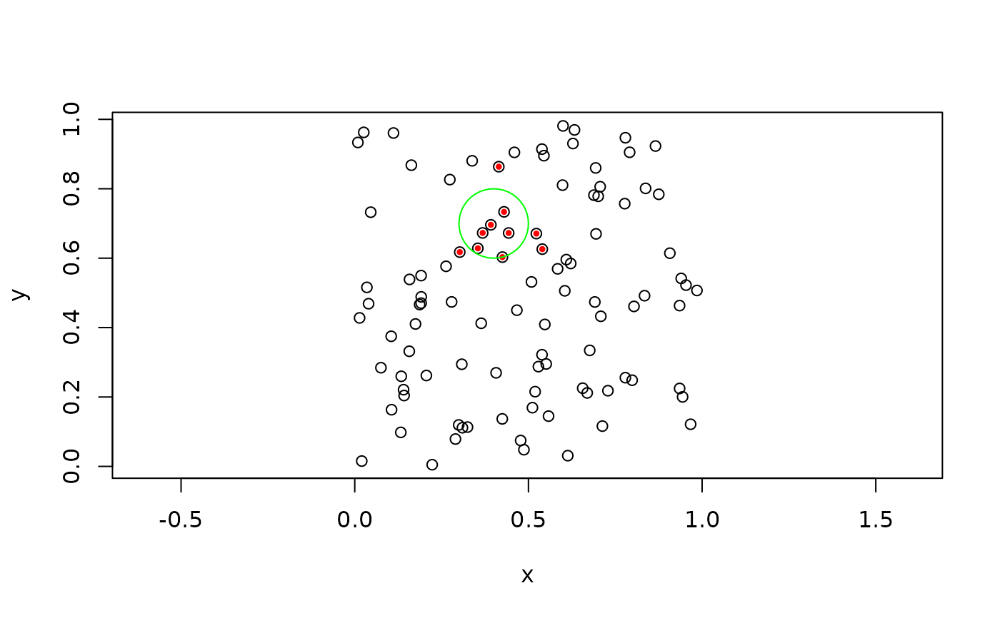

A kd tree is excellent for locating the points closest or farthest from a
given object. orion supports queries from points, circle/spheres, and
iso_rect/iso_cubes. If a point lies inside the geometry it's distance is 0.
If more points than requested lies inside the geometry a subset of these will
be returned. orion supports approximate queries through the eps argument.
Using it will speed up searches but may return wrong results (but within the
bounds of the given eps).
Arguments
- geometries
A vector of geometries to use for queries. Either a
euclid_point,euclid_circle2,euclid_sphere,euclid_iso_rect, oreuclid_iso_cubevector.euclid_point_wwill get coerced toeuclid_pointandeuclid_bboxwill get coerced toeuclid_iso_rect/euclid_iso_cube- tree
a
orion_kd_tree- n
An integer vector giving the number of points to find per query. Will recycle to the length of
geometries- eps
Approximation factor for the search. For nearest neighbor the returned points are no more than
1 + epstimes farther away than the true nearest neighbor, whereas for furthest neighbor the returned points are no less than1/(1 + eps)nearer than the distance to the true match. Will recycle to the length ofgeometries- nearest
Should nearest neighbor be search (setting it to
FALSEresults in a furthest neighbor search)- sort
Should the returned points be search by their distance to the query
- ...
Arguments passed on
Value
A list with elements points holding a euclid_point vector, id
matching the points to the index of geometries, and distance providing
the distance to the query
See also
Other kd tree queries:
kd_tree_range()
Examples
# Create a kd tree with points
pts <- euclid::point(runif(100), runif(100))
tree <- kd_tree(pts)
# Find furthest neighbor to point
pt <- euclid::point(0.4, 0.7)
neighbors <- kd_tree_search(pt, tree, 10, nearest = FALSE)
plot(pts, cex = 1)
euclid_plot(neighbors$points, cex = 0.6, pch = 16, col = 'red')
euclid_plot(pt, cex = 1, pch = 16, col = 'green')

# Find nearest neighbor to circle
circ <- euclid::circle(pt, 0.01)
neighbors <- kd_tree_search(circ, tree, 10)
plot(pts, cex = 1)
euclid_plot(neighbors$points, cex = 0.6, pch = 16, col = 'red')
euclid_plot(circ, fg = 'green')
